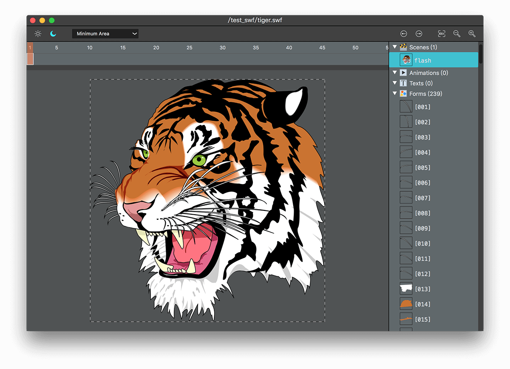
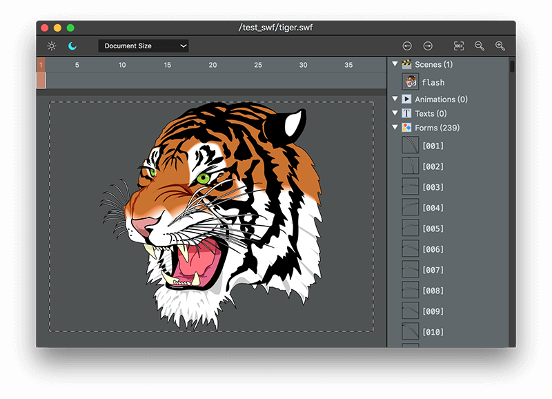
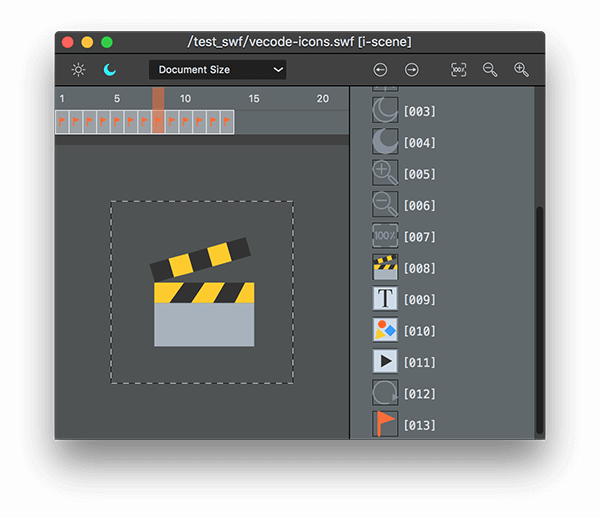
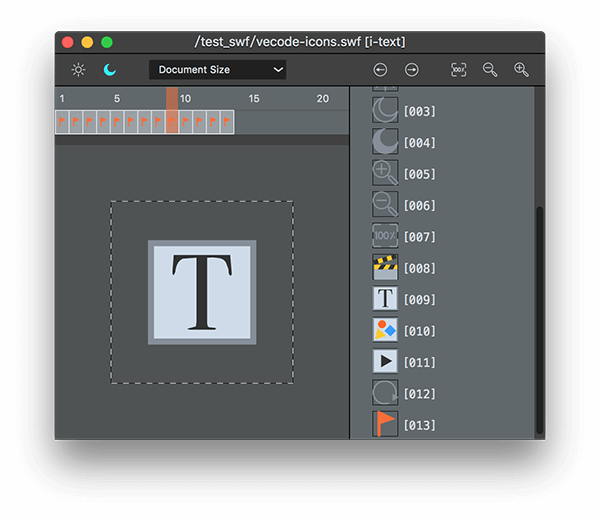

UI

The Vecode interface has 4 main sections:
- The right side the Parts Selection Column.
- The top the Tool Bar.
- Below the tool bar, the Frames Selection Bar
- Below the frames selection bar, the Preview Zoon。
Parts Selection Column
Some vector images contains several PARTS. As Adobe Flash can convert Shapes into Symbles, therefore every Symble has the corresbonding part(s). When choosing different parts in the column, the Preview Zoon will show the corresbonding image.
The widgits on the Tool Bar are devided into 4 groups.
Change UI Theme
You can choose between 2 themes: Day Light & Dark Night.
Export Settings
There are 2 options:
- Document Size stands for exporting original document size.
- Minimum Area stands for exporting image right along its edges, leaving no surrounded transparent pixels.
Check out the form below, the dash-line rectangle indicates the exported area.
| Document Size
| Minimum Area
|
|  |
 |
Jump
This 2 buttons can jump backward or forward to the ever-chosen parts whthin your action history, ecual to the menu items Jump Backward & Jump Forward.
Preview Scailing
Equal to menu items Raw Size, Zoom Out, Zoom In.
Frames Selection Bar
In some circumstance within 1 Flash file we'd new a few animation frames and each frame corresponding to 1 image.
For example, the icons using in Vecode application were drawn in Flash, with each icon corresponding to 1 tagged frame, the numbers of frames are equal to those of the icons. And the tags' name can be reflected on the names of the exported image files so to avoid redundant work.
|  |
 |
 |
Preview Zoon
The Preview Zoon occupies is the largest section of the interface. The graphic within the dash-line rectangle is the output of the export action. Open a vector file by dragging it into the preview zoon.
Hold your mouse within the preview zoon and right-click to callout the shortcut menu.
The menu item Reload can reload the present file.
Quick Jump
Press Command + mouse left-click to choose a part in the preview zoon leads to a pop-up quick jump menu.
Export
Open a vector image file, click menu item Export... or use shortcut Command + S to callout the export dialog, then choose the format of export file.
Quartz code
Quartz code is a 2D drawing code for iOS/Mac application development. It can fit in Objective-C and Swift.
When exporting Quartz code there is a checkbox option No color
When serve as an icon or a button, the color of the vector image usually need being change under certain circumstances. For instance, a button's normal status is in white color, and in red color while being pushed.
In this case the original color of button image serves no purpose. Then we can choose No color to unset the color of the exported drawing code.
When you want to change the color, e.g using a exported g_picture_icon_moon, you can use
g_picture_icon_moon.transToImage(CGSizeMake(30, 30), UIColor.redColor())
g_picture_icon_moon.transToImage(CGSizeMake(30, 30), UIColor.yellowColor())
g_picture_icon_moon.transToImage(CGSizeMake(30, 30), UIColor.blueColor())
to change it into different colors.
Notice that if choosing the No color option, there cannot be exporting a linear color effect image.
Android graphics code
Android graphics code, AKA the drawing code on Android platform.
The dawing code is a java file, which require a pakage name in the process of exportation. The last package name that you input will be automactically recorded by the program.
For example, when you export a file as PictureTiger.java, package name as com.example, it will automactically define a class com.example.PictureTiger.
package com.example.PictureTiger;
import android.graphics.*;
import com.vecodekit.GraphicsPicture;
public class PictureTiger extends GraphicsPicture
{
xxxxx
}